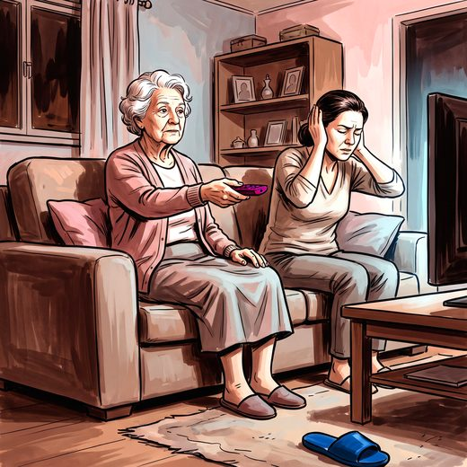

Consulta rápida à beira do leito
Condutas, doses e interações.
Referências da aula · 11
- Livingston G, Huntley J, Liu KY, et al. Dementia prevention, intervention, and care: 2024 report of the Lancet standing Commission. Lancet. 2024;404(10452):572-628. PMID 39096926. doi:10.1016/S0140-6736(24)01296-0.PubMedDOI
- Lin FR, Pike JR, Albert MS, et al. Hearing intervention versus health education control to reduce cognitive decline in older adults with hearing loss in the USA (ACHIEVE): a multicentre, randomised controlled trial. Lancet. 2023;402(10404):786-97. PMID 37478886. doi:10.1016/S0140-6736(23)01406-X.PubMedDOI
- World Health Organization. Deafness and hearing loss: fact sheet. Geneva: WHO; 2025.
- Chandrasekhar SS, Tsai Do BS, Schwartz SR, et al. Clinical practice guideline: sudden hearing loss (update). Otolaryngol Head Neck Surg. 2019;161(1_suppl):S1-S45. PMID 31369359. doi:10.1177/0194599819859885.PubMedDOI
- Bagai A, Thavendiranathan P, Detsky AS. Does this patient have hearing impairment? JAMA. 2006;295(4):416-28. PMID 16434632. doi:10.1001/jama.295.4.416.PubMedDOI
- Ventry IM, Weinstein BE. Identification of elderly people with hearing problems. ASHA. 1983;25(7):37-42. PMID 6626295.PubMed
- US Preventive Services Task Force. Screening for hearing loss in older adults: US Preventive Services Task Force recommendation statement. JAMA. 2021;325(12):1196-1201. PMID 33755083. doi:10.1001/jama.2021.2566.PubMedDOI
- Tunkel DE, Bauer CA, Sun GH, et al. Clinical practice guideline: tinnitus. Otolaryngol Head Neck Surg. 2014;151(2 Suppl):S1-S40. PMID 25273878. doi:10.1177/0194599814545325.PubMedDOI
- American Diabetes Association Professional Practice Committee. Retinopathy, neuropathy, and foot care: Standards of Care in Diabetes 2025. Diabetes Care. 2025;48(Suppl 1):S252-S265. PMID 39651973. doi:10.2337/dc25-S012.PubMedDOI
- Montero-Odasso M, van der Velde N, Martin FC, et al. World guidelines for falls prevention and management for older adults: a global initiative. Age Ageing. 2022;51(9):afac205. PMID 36178003. doi:10.1093/ageing/afac205.PubMedDOI
- Freitas EV, Py L. Tratado de Geriatria e Gerontologia. 5ª ed. Rio de Janeiro: Guanabara Koogan; 2022.
Documentos oficiais
Leis e publicações do Ministério da Saúde sobre o cuidado da pessoa idosa, de acesso livre.
Abrir os documentos